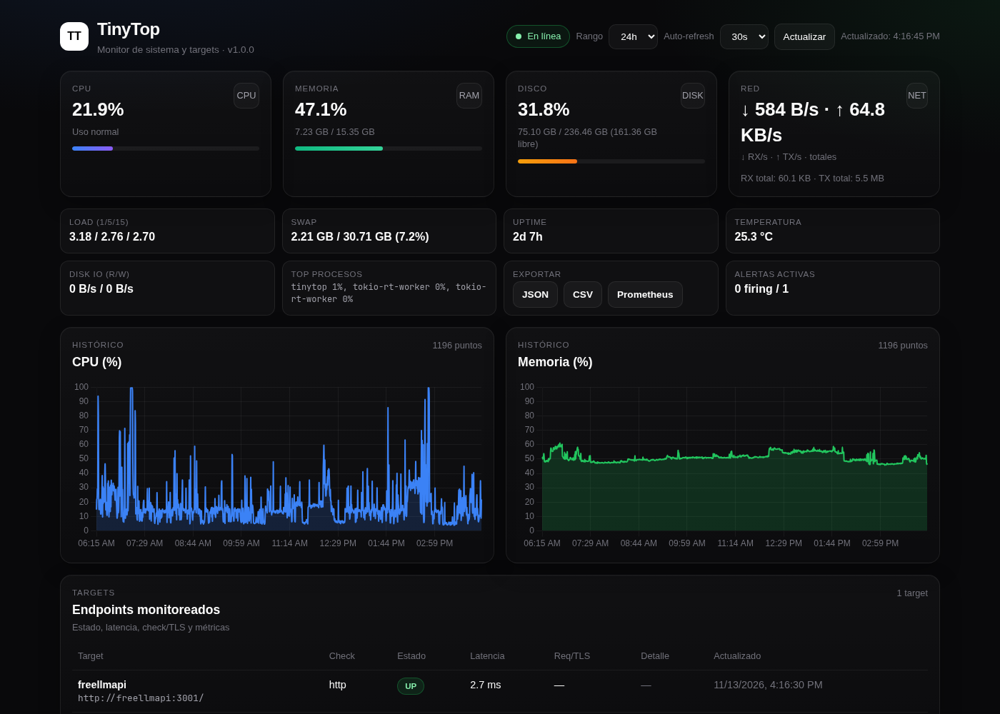
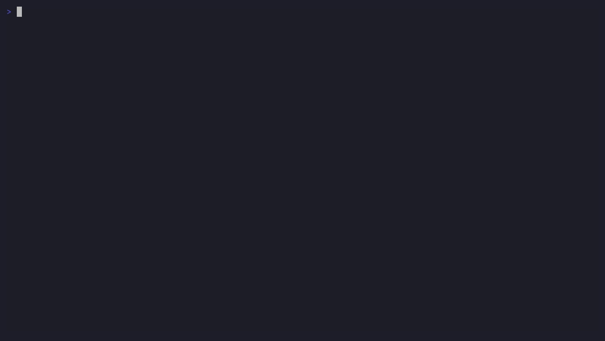

📈
Sistema
CPU, memoria, disco y red (acumulado y RX/TX por segundo). Discos reales con deduplicación y filtrado de pseudo-FS en Linux y *BSD, con refrescos incrementales.
Monitoreo autohospedado de sistema y targets HTTP con histórico en SQLite, dashboard web en tiempo real y TUI interactiva. Un solo binario, sin Prometheus ni servicios externos.


Métricas de sistema, sondeo HTTP, histórico y API en un binario único, eficiente y fácil de operar.
CPU, memoria, disco y red (acumulado y RX/TX por segundo). Discos reales con deduplicación y filtrado de pseudo-FS en Linux y *BSD, con refrescos incrementales.
Sondeo concurrente con cliente reutilizado: generic, Spring Boot/Actuator, Quarkus y Micronaut/Micrometer. Latencia, estado y extracción heurística de requests.
SQLite con WAL, migraciones y pragmas de bajo coste. Retención/pruning e histórico por rango. API JSON consistente para health, métricas e historial.
UI web embebida con Chart.js local (sin CDN) y modo TUI en terminal (--tui). Apagado ordenado, logging, config por archivo/entorno, validación estricta y cabeceras de seguridad HTTP.
Compila o levanta el contenedor y accede al dashboard en segundos.
# compilar y ejecutar (dashboard web)
cargo build --release --locked
./target/release/tinytop
# → http://localhost:9090
# modo TUI (terminal)
./target/release/tinytop --tui# levantar con compose
docker compose up -d --build
# → http://localhost:9090Construido para Linux y sistemas *BSD, con binarios oficiales listos para usar.
sysinfo.ghcr.io/dev1lsconf/tinytop.cargo build --release --locked.